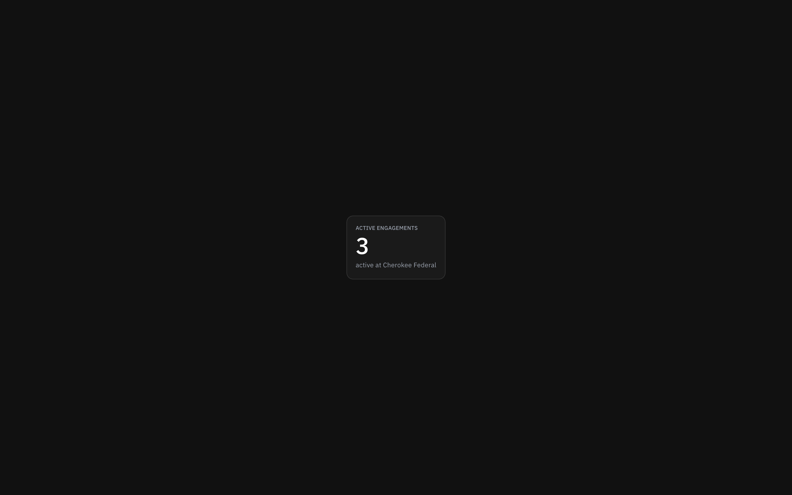
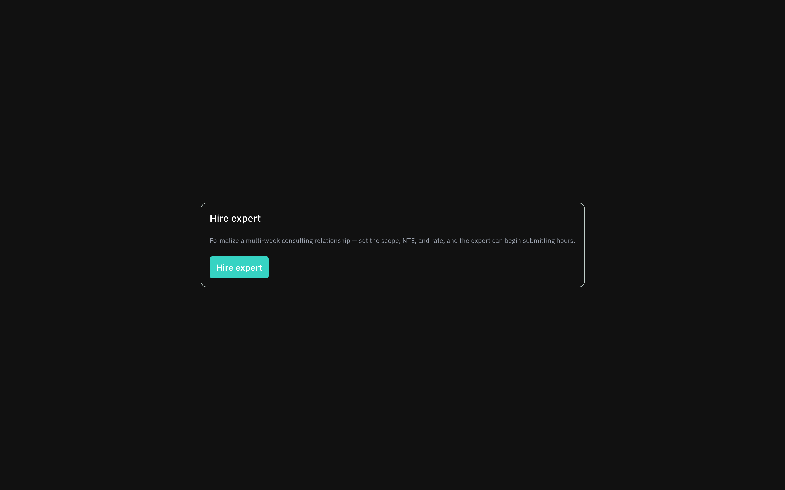
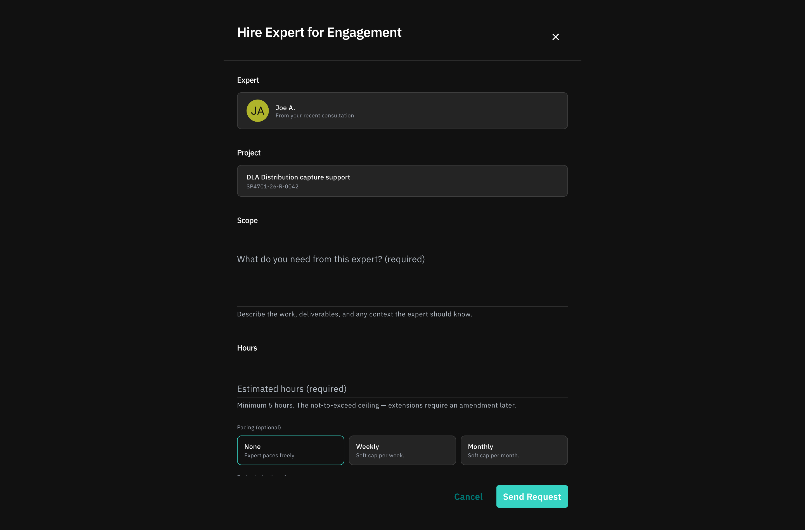
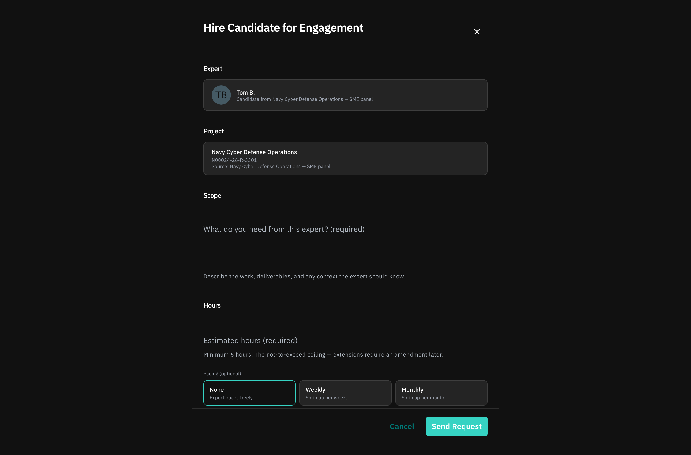
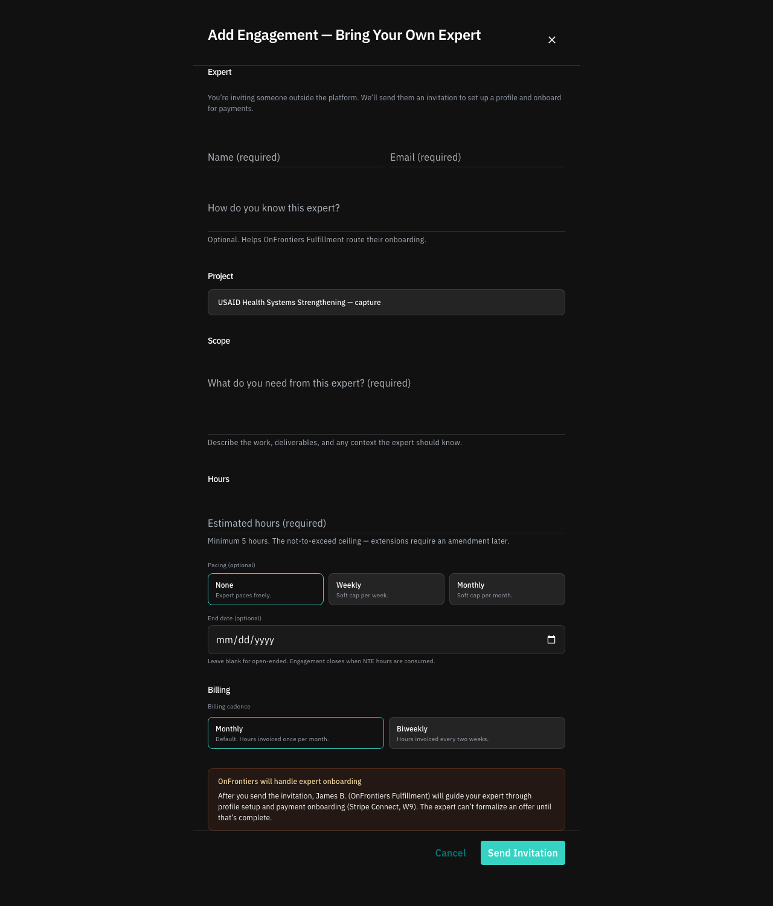
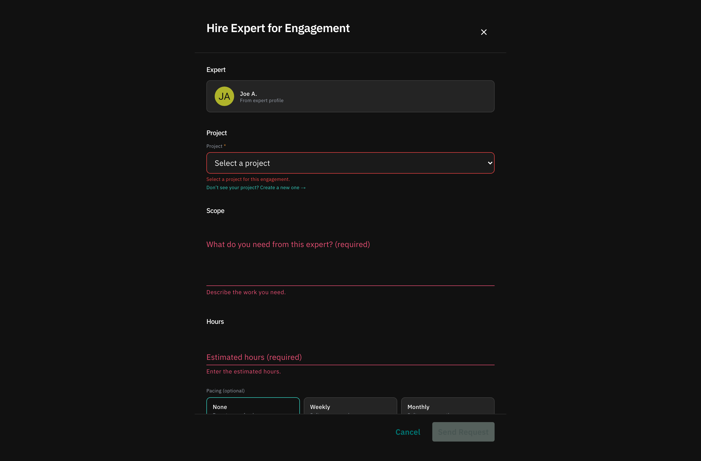
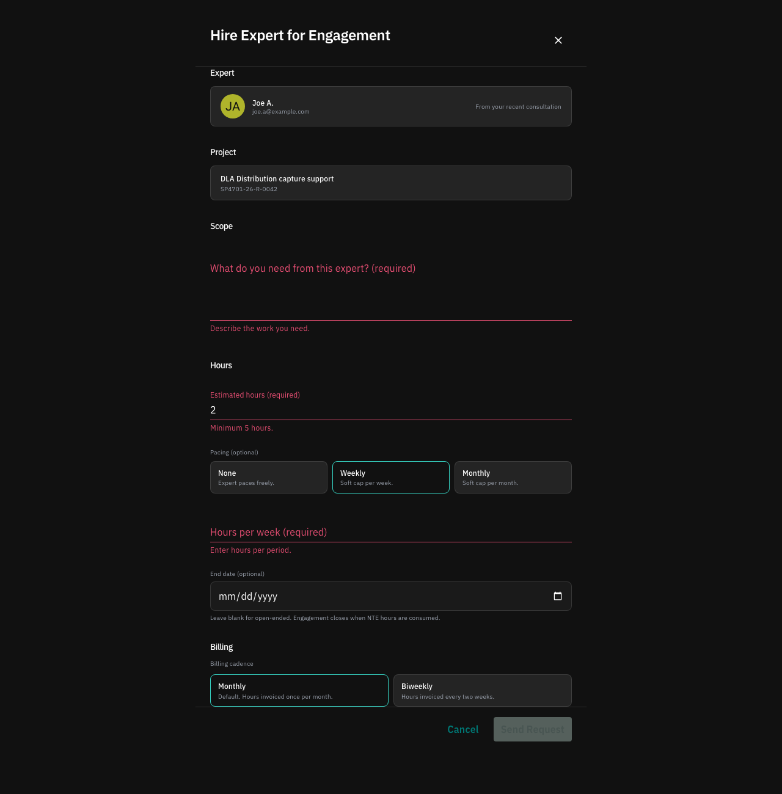
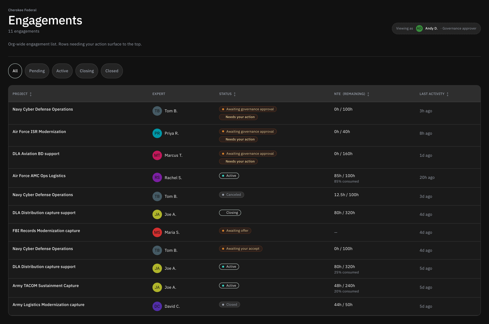
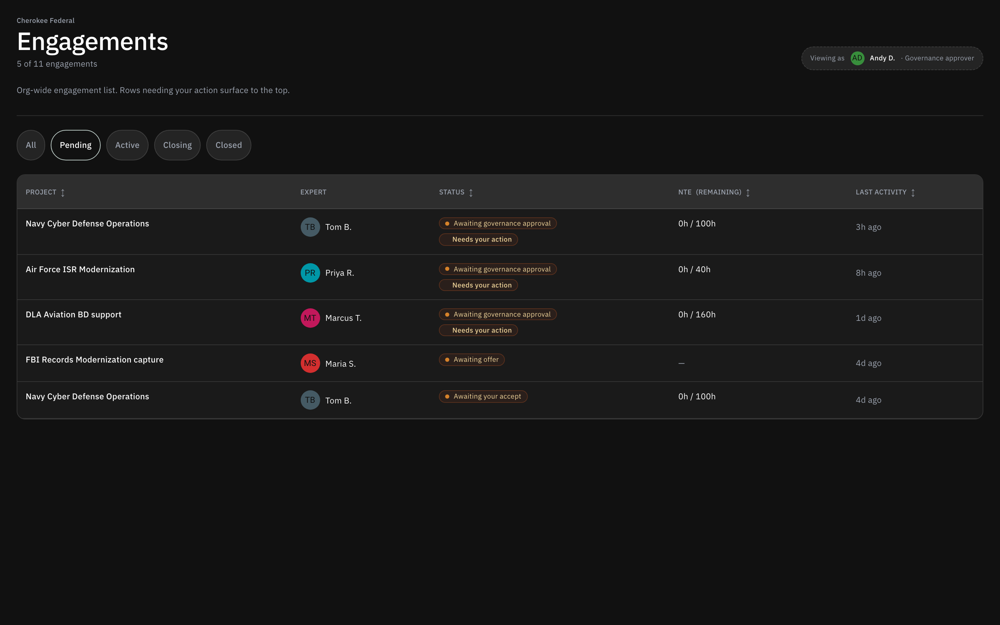

How Cherokee uses OnFrontiers.
A walkthrough of the customer experience — what Bill (the work approver who books experts) sees day‑to‑day, and what Andy (the governance lead who controls how Cherokee spends) sees when policy gets in the way. Designed for sharing with Cherokee directly.
Bill's home base.
Bill signs in and lands here every morning. The dashboard is built around one question: what needs my attention right now?
Three things on this screen — the "Hire an expert" CTA at top, an action‑sorted list of his engagements, and a quiet right rail with messages and counts. Everything else is one click away.
A list sorted by what needs doing.
The engagement list isn't sorted by recency or alphabet — it's sorted by action required. Engagements where Bill needs to do something (review an offer, approve hours, sign off on a deliverable) float to the top with a Action needed pill. Active work sits below. Closed engagements collapse to the bottom.

The number next to "My experts" in the right rail is a count of engagements with unread activity — not a count of unread messages. We made this deliberate: counting messages turns the dashboard into an inbox to clear, which competes with the list itself for attention.
"Hire an expert" is always one click.
Whether Bill knows exactly who he wants, has been emailed a candidate's bio, or just has a problem he needs to staff — the entry point is the same button. The flow branches once we know what kind of starting material he has.

Four ways an engagement starts.
"Hire an expert" opens a side drawer. The drawer adapts to whichever of four starting points Bill arrives with — there's no wizard branching, just one form that asks for the relevant pieces.
Path A — A consultation booking.
Bill needs an hour with someone who knows the FAA's Part 23 certification process. He doesn't have a name in mind. He picks a topic and a duration, and OnFrontiers takes it from there.

Path B — Ongoing advisory with a candidate in mind.
This is the most common path for repeat customers. Bill has a name (often surfaced from his own network or via prior projects) and wants ongoing advisory. He pastes a bio or links to a profile, defines the scope of work, and submits.

Path C — "I already introduced myself."
Often Cherokee has already had an intro call directly with the expert before OnFrontiers gets involved. Bill flags "customer‑introduced", which tells OnFrontiers to skip outreach and move straight to paperwork.

Path D — Hiring from an existing profile.
If Bill is browsing a profile and clicks "Hire," the drawer opens with the expert locked in — name, rate, and prior‑engagement context pre‑populated. Bill only fills in what's new: the scope and budget for this piece of work.

Validation, before submission.
One drawer, four shapes — but the validation is the same: budget caps, missing scope, unsupported regions. The drawer can't be submitted with errors, and field‑level help text explains exactly why.

The engagement page.
Once an engagement exists, it has a permanent home — one URL, four tabs, one record of truth.
Overview — the spine.
The Overview tab is the authoritative read on an engagement: who, what, status, scope, budget, the running event log. Both Bill and the expert see the same shape — though Bill can see budget and rate; the expert sees their own rate and a redacted budget.

Hours — submitted, approved, paid.
The expert submits hours from their side. Bill reviews them here. Each row carries a status — Pending review until Bill clicks approve, Approved after, and a paid stamp once OnFrontiers has run payroll.

Messages — single conversation.
One thread per engagement, scoped to that engagement. No DMs across engagements. No expert‑wide inbox. We learned the hard way that surfacing every message in one place leads to wires getting crossed — Bill needs to know "is this about this piece of work."

Settings — stop, change, close.
Settings is where Bill can pause an engagement, raise the budget cap, change the scope, or close it out. Anything that affects the contract or governance posture gets logged to the engagement's event log so Andy has a paper trail.

When governance steps in.
Cherokee has put governance rules in place. Some of Bill's submissions exceed thresholds and need Andy's sign‑off before they go live.
Bill submits, then waits.
When a submission triggers governance, the engagement enters a Awaiting governance hold. Bill sees the hold on the engagement page itself — there's no separate "pending approvals" screen for him to chase.

Andy's governance inbox.
Andy's day looks different from Bill's. He doesn't run engagements — he reviews them. His landing page is a single inbox of submissions awaiting his decision: approve, request changes, or reject.

Each row is a single decision. Andy can see the requester, the engagement summary, the governance flag(s) that triggered the review, and the budget at stake — without leaving the inbox. He only opens the engagement page if he wants the long context.
Approve, adjust, reject.
Andy expands a row to act. The most common action is approve, but two other paths matter:
- Adjustment. The submission is fine in spirit but the budget is too high, or the scope needs trimming. Andy proposes the adjustment; Bill confirms.
- Rejection. The submission shouldn't proceed — wrong vendor, wrong region, duplicate of another active engagement. Andy provides a reason; Bill is notified.


What Bill sees after governance acts.
The engagement page tells the story. If Andy proposes an adjustment, Bill sees the proposal inline with accept / counter controls. If Andy rejects, the engagement is sealed in the rejected state with the reason visible.


Bill's inbox after a governance decision.
From Bill's side, a governance decision shows up as a top‑of‑list item on his dashboard with the appropriate Action needed pill. He clicks through and lands on the engagement page in the right tab.


The org‑wide rollup.
Andy doesn't just want to know what's in his queue today — he needs to see what Cherokee is doing across all engagements, all approvers, all programs.
Every engagement, all of Cherokee.
The rollup is a single table: every active, pending, and recently‑closed engagement at Cherokee, with the work approver in the byline. Andy can sort by any column; the default sort is by what's actively progressing.

Filtered to "needs review."
The same table filtered to just the engagements waiting on a governance decision. This is what Andy uses on Monday mornings to triage where the bottlenecks are — and to see whether one work approver is repeatedly tripping the same threshold.

Status pills, end‑to‑end.
A small but important detail. The customer side of an engagement always carries a single status pill that tells Bill what's happening — at a glance, anywhere in the product.
The pills aren't decorative. They're the contract between the system and the user about what state an engagement is in. They appear in the dashboard list, on the engagement page, in notifications, and in the rollup — always with the same colour, the same wording.